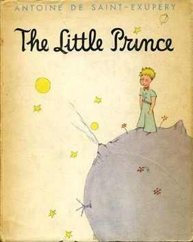

As the little prince dropped off to sleep. I took him in my arms and set out walking once more.
I felt deeply moved, and stirred. It seemed to me that I was carrying a very fragile treasure.
It seemed to me, even, that there was nothing more fragile on all Earth.In the moonlight I looked at
his pale forehead, his closed eyes, his locks of hair that trembled in the wind, and I said to myself:
"What I see here is nothing but a shell. What is most important is invisible..."
As his lips opened slightly with the suspicion of a half-smile, I said to myself, again: